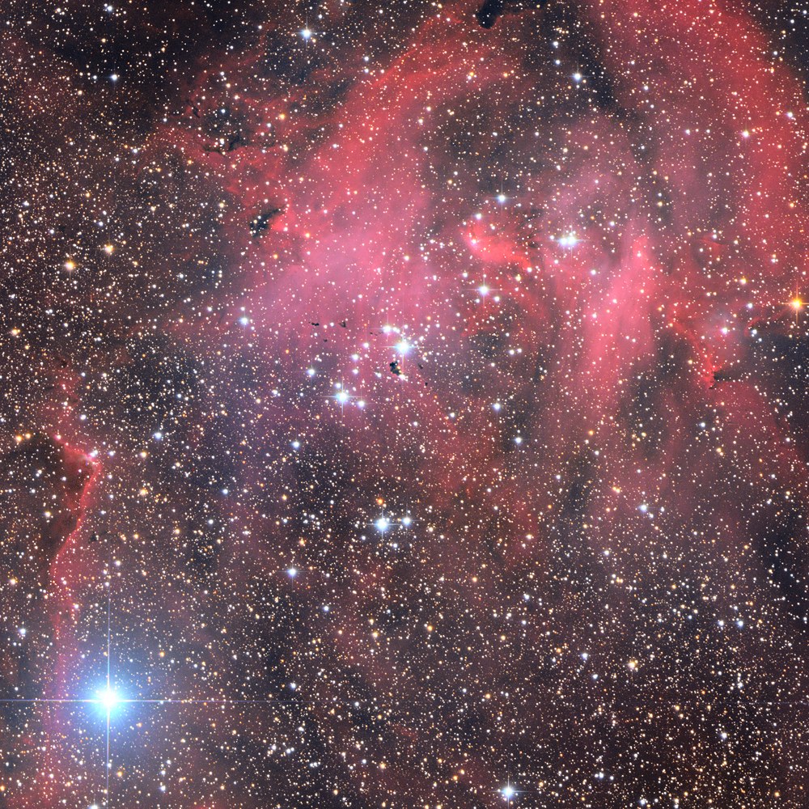
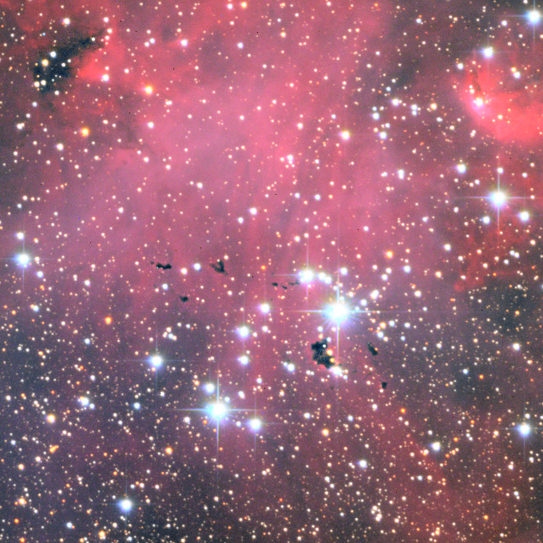

The Running Chicken - a rich emission nebula illuminated by a cluster of massive stars. It contains Thackery's Globules (see inset) - dark clouds of dark cosmic dust often associated with star forming regions.
Image acquired at D21 on May 14, 2013.

(click on images for larger versions)
